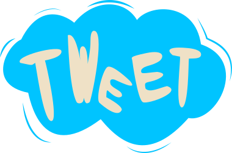
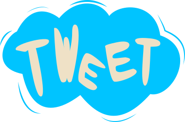

The Context
Coca Cola, une marque active et créative
Au fils des années l’entreprise Coca Cola a façonné son image et sa notoriété à grand coup de campagnes publicitaires de grande ampleur, marquantes par leur originalité et par la qualité des réalisations.
Au fils des siècles la marque a par ailleurs souvent fait appel à des artistes et designers de renom pour réaliser des concepts visuels encore gravés dans les esprits.
Aujourd’hui Coca Cola cherche à poursuivre cette tradition de campagnes innovantes et créatives en prenant en compte les nouveaux enjeux de 2012 et en particulier le canal internet.
La marque cherche en particulier à s’adresser à une cible jeune, sensible aux innovations digitales, pour renforcer sa notoriété et son image de marque innovante.

Une marque active et créative en terme de campagne de communication :
•Des thèmes récurrents dans la communication Coca Cola : l’émerveillement, le rêve, le merveilleux
•Un lien fort entre la marque (campagnes, packaging, logo) et l’art
•Une marque qui s’adresse à une cible plutôt jeune, par conséquent sensible au digital et à l’innovation de manière générale
Image :
Entretenir et renforcer l’image d’une marque jeune et innovante, proche des milieux artistiques et active dans le domaine du digital.
Notoriété :
Entretenir la notoriété de la marque sur les réseaux sociaux et en particulier sur Twitter.


 



Partech
#SocialCoke, ou comment transformer l’écriture sociale en message publicitaire.
View the case study View the case study